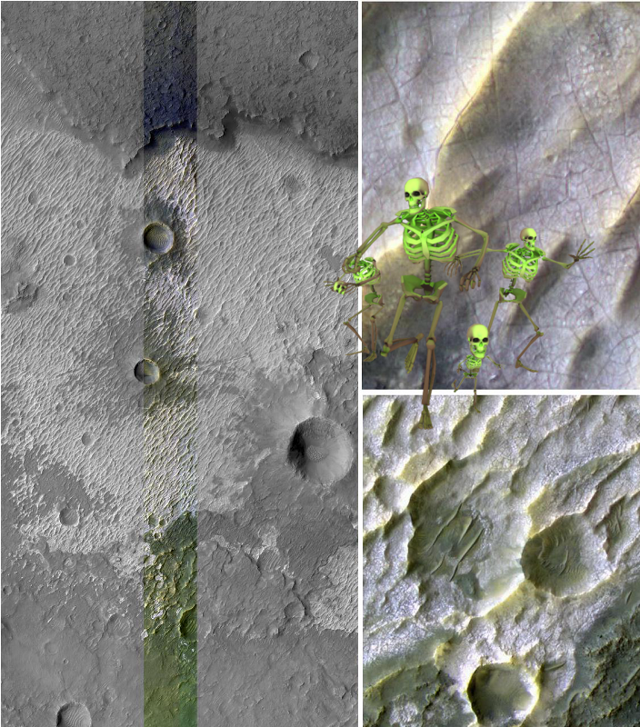
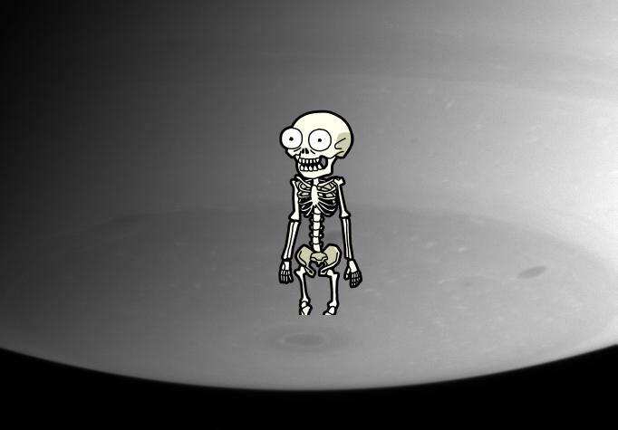

-
Something Strange – Ghost Head Nebula.
-
Something Strange ; Samhain Catenae on Ceres!
-
A Mystery on Seagull Nebula -- Running with the Big Dog
-
Something Strange, A Mystery, ??? on Secretive Rings
-
 A Mystery ; Ghost Head Nebula.
A Mystery ; Ghost Head Nebula. -
An Unexpected Discovery ; Saturn Polar Aurora
-
A Mystery, A Mystery, An Unexpected Discovery, A Mystery, Something Strange, A Mystery, An Unexpected Discovery, An Unexpected Discovery, Something Strange, A Mystery @ Older Galaxy Pair Has Surprisingly Youthful Glow!
-
A Mystery on Colorful Kertesz in Caloris
-
An Unexpected Discovery ; ESO 2.2-m WFI Image of the Tarantula Nebula.
-
 Something Strange + The Many Colors of Mercury.
Something Strange + The Many Colors of Mercury. -
 A Mystery – Mosaic of Saturn Rings.
A Mystery – Mosaic of Saturn Rings. -
A Mystery @ Color of the Moon.
-
Something Strange + Hubble Spins a Web Into a Giant Red Spider Nebula!
-
An Unexpected Discovery + Bright Exposures of Chloride Salt on Southern Mars!
-
Something Strange ; Saturn Approach - Full Disk
-
An Unexpected Discovery, A Mystery @ Rhea in Natural Color.
-
An Unexpected Discovery @ Asteroid Initiative Industry and Partner Day!
-
 An Unexpected Discovery + Bright Moon in Darkness!
An Unexpected Discovery + Bright Moon in Darkness! -
A Mystery on Mercury - in 3-D!
-
Something Strange | Dark Storms, Bright Clouds.
-
An Unexpected Discovery ; Band of Bright Rock False Color.
-
Something Strange ; Highly Fractured Dark and Bright Terrain.
-
An Unexpected Discovery ; Hubble Views Ancient Storm in the Atmosphere of Jupiter - Montage!
-
An Unexpected Discovery – Mars at Ls 306°: Tharsis.
-
Something Strange @ Three dimensional Visualization of Jupiter Equatorial Region
-
An Unexpected Discovery | F Ring Knot
-
A Mystery | Informal Names for Features on Pluto Sputnik Planum!
-
A Mystery + The Bright Peaks of Mickiewicz!